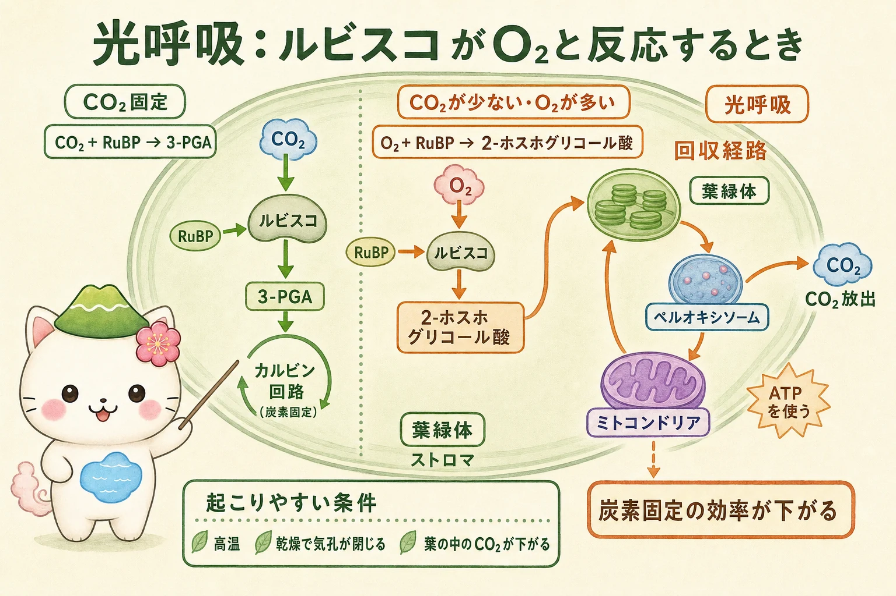

光呼吸はなぜ起こるか
カルビン回路でCO2固定を始めるルビスコは、CO2をRuBPに付加するカルボキシラーゼとして働きます。しかしルビスコは、O2をRuBPに付加するオキシゲナーゼとしても働けます。このとき3-PGAと、すぐにはカルビン回路で使えない2-ホスホグリコール酸ができます。
2-ホスホグリコール酸は、葉緑体・ペルオキシソーム・ミトコンドリアをまたぐ回収経路で処理されます。この過程ではATPや還元力が使われ、CO2が放出されます。光の下で起こるため光呼吸と呼ばれますが、糖からATPを得る細胞呼吸とは別の過程です。固定した炭素とエネルギーの一部を失うので、正味の光合成効率を下げます。
高温や乾燥で気孔が閉じると、葉の内部ではCO2が不足しやすく、相対的にO2の影響が大きくなります。この条件で光呼吸が増えやすいことが、CO2を濃くする仕組みの意味につながります。


光呼吸は、植物が「呼吸をたくさんしている」という意味ではないよ。ルビスコがO2も受け取ってしまったときに、使いにくい物質を回収するための道すじなんだ。
C3植物：直接CO2を固定する
C3植物では、昼に気孔から入ったCO2を、葉肉細胞の葉緑体でルビスコが直接固定します。最初に安定して得られる産物が3炭素の3-PGAであることが名前の由来です。イネ、コムギ、ダイズなど、陸上植物の多くがこの型です。
工程が比較的少なく、温暖で水が十分にある環境では有利です。一方、暑く乾いた日に気孔を閉じるとCO2が入りにくくなり、ルビスコのオキシゲナーゼ反応、つまり光呼吸の割合が上がりやすくなります。C3植物が「弱い」ということではなく、直接固定する代わりにCO2濃縮の追加装置を持たない戦略です。
C4植物：場所を分けてCO2を濃くする
C4植物は、まず葉肉細胞でPEPカルボキシラーゼを使い、CO2を4炭素化合物へ取り込みます。この酵素はO2と競合しないため、低いCO2濃度でも初期固定を進めやすい性質があります。4炭素化合物は維管束鞘細胞へ運ばれ、そこでCO2を放出します。
カルビン回路とルビスコは、CO2が高められた維管束鞘細胞で働きます。初期固定とカルビン回路を空間的に分業することで、ルビスコの近くのCO2を濃くし、光呼吸を抑えます。トウモロコシ、サトウキビ、ソルガムなどが代表例です。ただし4炭素化合物を運び、CO2を濃縮するためには追加のATPが必要です。
CAM植物：昼夜を分けてCO2を貯める
CAM植物は、夜に気孔を開きます。夜に取り込んだCO2はPEPカルボキシラーゼで4炭素化合物（主にリンゴ酸）となり、液胞に貯蔵されます。蒸発が少ない夜にCO2を取り込めるため、水の節約に役立ちます。
昼は気孔を閉じ、液胞から出した有機酸を分解してCO2を放出し、同じ細胞内でカルビン回路を進めます。初期固定とカルビン回路を時間的に分業するのがC4との大きな違いです。サボテン、パイナップル、多くのランやベンケイソウの仲間が代表例です。夜間にためられる量には限りがあるため、一般に成長速度との折り合いも必要になります。

三つの戦略と環境の関係
どの型にも得意な条件と代価があります。C3植物は追加の濃縮経路にATPを使わず、比較的涼しく湿った環境で効率よく働きます。C4植物は高温・強光の環境で光呼吸を抑えやすい一方、葉の構造と追加エネルギーが必要です。CAM植物は乾燥地で水利用効率を高められますが、夜に貯められるCO2量が日中の炭素固定を制限します。
したがって、C3・C4・CAMは優劣ではなく、炭素の獲得、水の損失、エネルギー消費、環境の間で異なる折り合いをつける方法です。同じ植物でも、種や生育環境によって光合成の実際の速さは変わります。
C4とCAMはどちらも「CO2を先に集める」仲間。でも、C4は別の細胞へ運ぶ、CAMは夜のうちに液胞へためる。どこで分けるか、いつ分けるかが見分ける鍵だよ。
この冊子の要点
- ルビスコはCO2固定だけでなくO2との反応も行い、光呼吸につながります。
- 光呼吸の回収経路ではエネルギーが使われ、CO2が放出されるため、正味の光合成効率が下がります。
- C3植物は葉肉細胞で直接CO2を固定します。C4植物は細胞の場所を分け、CAM植物は昼夜の時間を分けてCO2を濃縮します。
- C4・CAMの仕組みは光呼吸を抑えたり水を節約したりする一方、追加のATPや構造・時間の制約を伴います。
参照資料
- OpenStax Biology 2e：The Calvin Cycle
- OpenStax Biology 2e：The Evolution of Photosynthesis
- Taiz et al., Plant Physiology and Development, Oxford University Press.